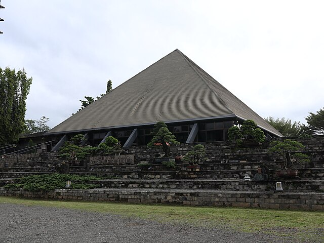
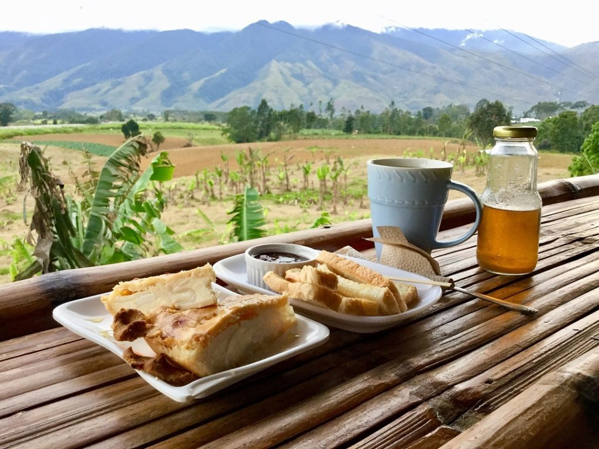
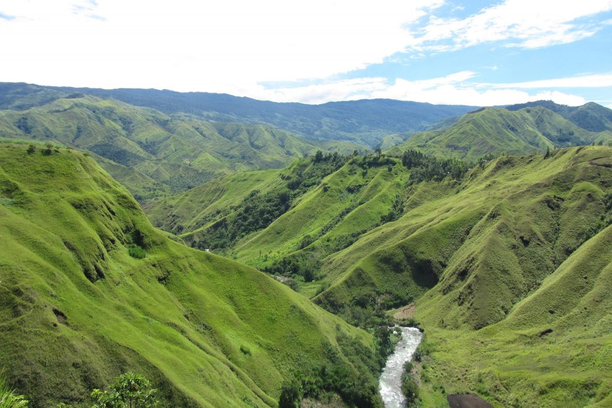
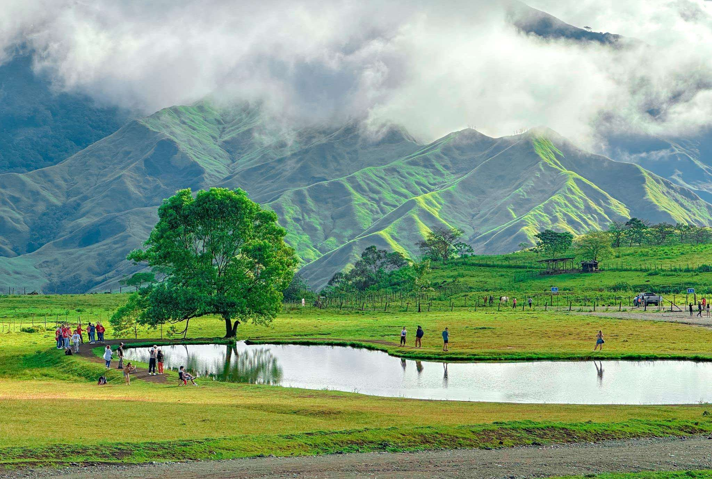
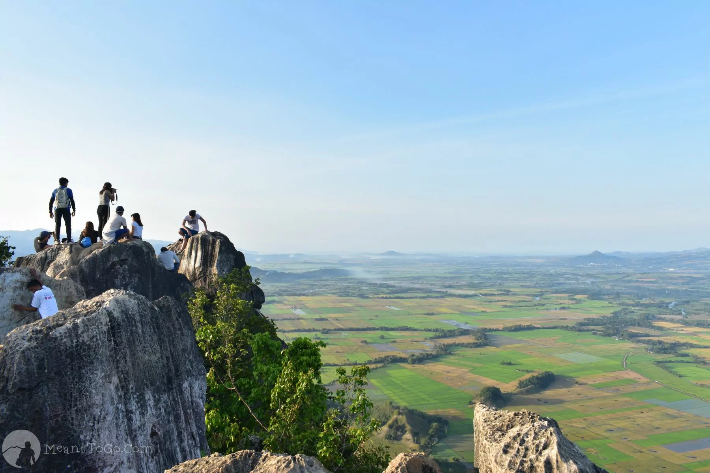

Tourist Spots

Manolo Fortich
Manolo Fortich is a municipality known for its eco-tourism destinations.

Abbey of Transfiguration Monastery
Pyramidal church & Benedictine monastery in Zen-like environs with a museum & gift shop.

Café sa Bukid
Café sa Bukid is a two-storey bamboo café which offers Bukidnon local products such as honey and pineapple.

Lovers Lane Viewers Deck, Impasug-ong
The Lovers Lane offers a grand overview of the Agusan Canyon

Communal Ranch
The communal ranch is a 642-hectare government-owned ranch located at Capitan Bayong, Impasug-ong.

Mt. Capistrano
It is 610 meters high and its landform is crowned with amazing sharp rocks.